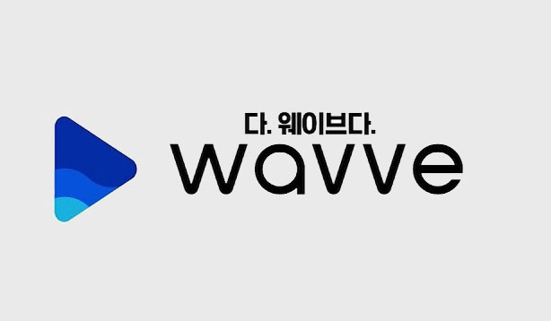

Wavve
웨이브(WAVVE)는 푹과 OKSUSU가 설립·통합되어 SK텔레콤과 지상파 방송3사가 합작 운영하는 인터넷 기반 OTT 서비스이다. SK텔레콤이 자회사인 SK브로드밴드를 통해 운영 중이던 OKSUSU와 지상파 3사(KBS·MBC·SBS)가 합작회사인 콘텐츠연합플랫폼(CAP)을 통해 운영 중이던 푹을 합병하였다.2019년 8월 공정위는 통합 OTT 출범으로 인한 경쟁제한을 막기 위해 지상파 3사가 향후 3년간은 다른 OTT에 방송 VOD를 안정적으로 공급하게 하는 등 시정조치를 가하는 조건부 승인을 했다. 현재 채널은 JTBC 계열사 채널들에 한하여 실시간 방송을 중계하지 않는다. 그리고 JTBC 관련 다시보기 서비스도 2020년 1월 31일자로 폐지되었다.
